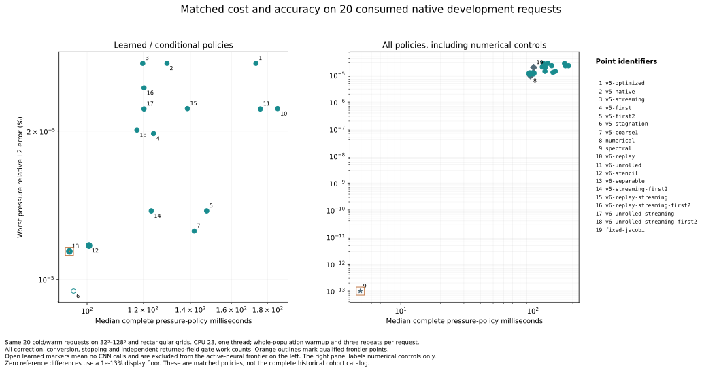
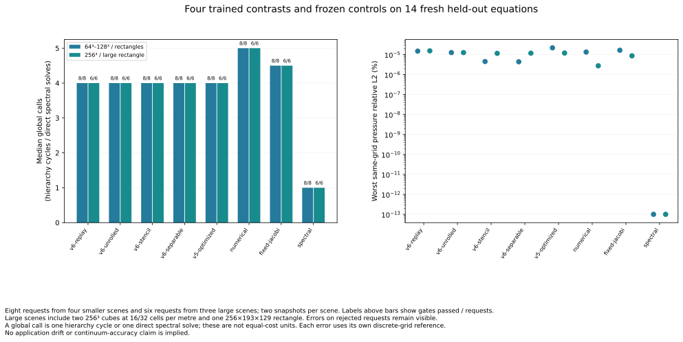
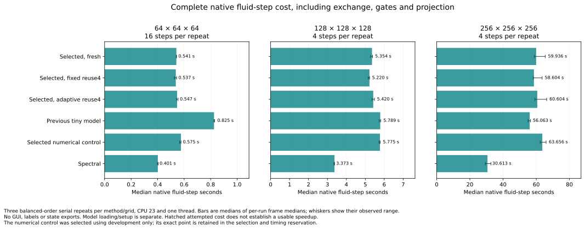
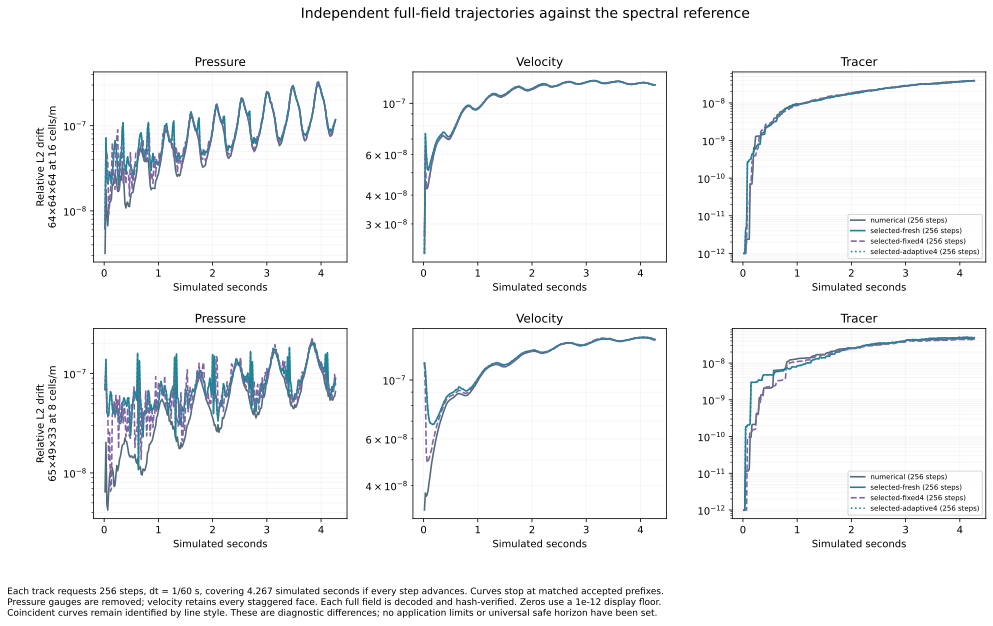
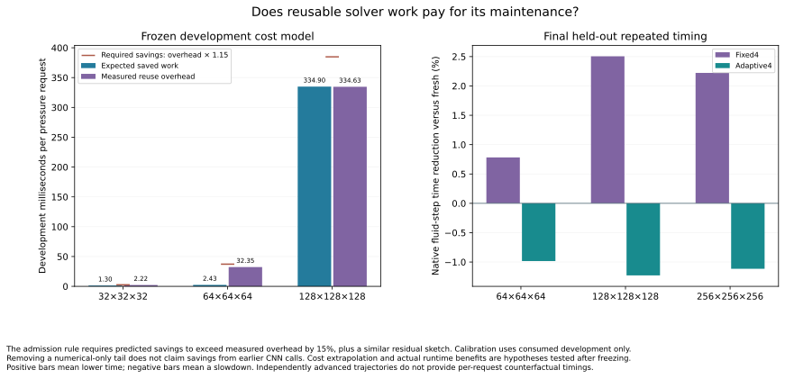

Completed five-track study. Updated 2026-10-19T14:18:54.532259+00:00.
On 64×64×64 cells, the selected fresh policy took 0.541 s per fluid step versus 0.825 s for the previous tiny policy (34.4% lower). On 128×128×128 cells, the selected fresh policy took 5.354 s per fluid step versus 5.789 s for the previous tiny policy (7.5% lower). On 256×256×256 cells, the selected fresh policy took 59.936 s per fluid step versus 56.063 s for the previous tiny policy (6.9% higher).
At 64×64×64 cells, selected / numerical / spectral times are 0.541 / 0.575 / 0.401 seconds per fluid step. At 128×128×128 cells, selected / numerical / spectral times are 5.354 / 5.775 / 3.373 seconds per fluid step. At 256×256×256 cells, selected / numerical / spectral times are 59.936 / 63.656 / 30.613 seconds per fluid step.
All four fitted contrasts and their fresh CPU restores completed. Every original development request remains visible. The spectral method and the best development-qualified iterative numerical control are retained as strong comparisons; improving the neural policy does not establish superiority over those controls. This study does not promote an application model.
The replay and three-iteration arms start from the same completed v5 post-coarse checkpoint. The stencil has 27 learned coefficients; the separable model has three axis filters with nine coefficients. Every model has a fixed q/8 skip, replicated boundaries, fixed original train-only normalization, 2,400 updates and the same original 1,600-small-sample stream plus 800 larger-tier selections. Actual forward work differs for multi-iteration training. All models use the same original 34-parent native bank; no new v6 scene enters training.
| Model | Parameters | Training iterations | Updates | Actual NN forwards | Forward cells | Training seconds | Exact fresh CPU restore |
|---|---|---|---|---|---|---|---|
| v6-replay | 648 | 1 | 2400 | 2400 | 612197560 | 369.5 | True |
| v6-unrolled | 648 | 3 | 2400 | 7200 | 1836592680 | 681.0 | True |
| v6-stencil | 27 | 1 | 2400 | 2400 | 612197560 | 284.8 | True |
| v6-separable | 9 | 1 | 2400 | 2400 | 612197560 | 277.7 | True |
The first three-iteration attempt failed and drained at its original 1,800-second ceiling after reporting at least 2200 updates. Its exact final partial update count was not published, and it is excluded from successful-fit counts. The successful second execution keeps the same configuration, initial tensors, sampling and 1,800-second ceiling. It uses the qualified direct fine operator and the exact symmetric-cycle transpose, including the cell-zero gauge transpose. No coarse-stage gradient is discarded. Dense transpose, finite-difference, original-autograd and full-128³ tests check the derivative. The complete three-step objective differs by at most 1.97e-13 relatively and all 648 parameter gradients by 5.55e-08. These are numerical equivalence checks; the observed training durations are not repeated isolated throughput benchmarks. Discarded attempt · Captured amendment.
Nineteen configurations see the same 254 requests: 192 retained prior requests plus ten native and eighteen spatial v5 development requests, and ten native and twenty-four spatial v5 blind requests that are now consumed development. No v6 blind data is used here. Both unchanged physical gates apply to the actual returned float64 pressure. Conditional policies with no observed CNN calls remain reported but cannot substitute for an actively used learned model in the long/larger-grid model tests.
| Policy | Qualified | Median global calls | Median CNN calls | Worst pressure relative L2 |
|---|---|---|---|---|
| v5-optimized | 254/254 | 3.0 | 3.0 | 4.54e-06 |
| v5-native | 254/254 | 3.0 | 3.0 | 4.54e-06 |
| v5-streaming | 254/254 | 3.0 | 3.0 | 4.54e-06 |
| v5-first | 254/254 | 4.0 | 1.0 | 1.39e-06 |
| v5-first2 | 254/254 | 3.0 | 2.0 | 2.35e-06 |
| v5-stagnation | 254/254 | 4.0 | 0.0 | 4.81e-07 |
| v5-coarse1 | 254/254 | 5.0 | 5.0 | 2.2e-06 |
| numerical | 254/254 | 4.0 | 0.0 | 4.81e-07 |
| spectral | 254/254 | 1.0 | 0.0 | 1.38e-08 |
| v6-replay | 254/254 | 3.0 | 3.0 | 4.14e-06 |
| v6-unrolled | 254/254 | 3.0 | 3.0 | 4.06e-06 |
| v6-stencil | 254/254 | 3.0 | 3.0 | 2.46e-06 |
| v6-separable | 254/254 | 3.0 | 3.0 | 2.53e-06 |
| v5-streaming-first2 | 254/254 | 3.0 | 2.0 | 2.35e-06 |
| v6-replay-streaming | 254/254 | 3.0 | 3.0 | 4.14e-06 |
| v6-replay-streaming-first2 | 254/254 | 3.0 | 2.0 | 2.03e-06 |
| v6-unrolled-streaming | 254/254 | 3.0 | 3.0 | 4.06e-06 |
| v6-unrolled-streaming-first2 | 254/254 | 3.0 | 2.0 | 1.84e-06 |
| fixed-jacobi | 254/254 | 4.0 | 0.0 | 1.6e-06 |
In the work-count tables, the spectral row records direct spectral solves; other rows record hierarchy cycles. The common counter is not a unit of equal computational cost. Repeated wall-clock comparisons remain the basis for speed claims.
The fixed q/8 numerical control exactly isolates the learned graph’s skip with the same f32 conversion and zero learned convolutions. Its zero-parameter and full-256³ equivalence checks, and a real 32-step native episode, are retained. This separates benefits from learned filtering from benefits of adding an inexpensive numerical smoother. The coarser-placement probe directly observes 32³ CNN inputs on a native 64³ request; fewer neural cells alone do not establish a lower complete solve cost. The 0.25 stagnation trigger did not invoke the CNN on any of the 254 consumed requests. A deliberately weakened-global-stage test exercises its dispatch branch without claiming a naturally stalled-flow benefit.
Twenty consumed native cold/warm requests from ten forcing scenes on 32³–128³ and rectangular grids. CPU 23, one thread, a complete population warmup and three timed repeats per request. Loading, setup and labels are excluded. Every correction, conversion, operator, stopping decision and common independent returned-field gate counts. No correction directions carry between independent requests. Both passing coverage and error are shown; an attempted rejected point cannot enter a qualified frontier.
| Policy | Parameters | Qualified | Median ms | Worst pressure relative L2 | Median CNN calls |
|---|---|---|---|---|---|
| v5-optimized | 648 | 20/20 | 173.208 | 2.75e-07 | 4.0 |
| v5-native | 648 | 20/20 | 129.683 | 2.75e-07 | 4.0 |
| v5-streaming | 648 | 20/20 | 119.846 | 2.75e-07 | 4.0 |
| v5-first | 648 | 20/20 | 124.149 | 1.98e-07 | 1.0 |
| v5-first2 | 648 | 20/20 | 147.573 | 1.38e-07 | 2.0 |
| v5-stagnation | 648 | 20/20 | 95.700 | 9.46e-08 | 0.0 |
| v5-coarse1 | 648 | 20/20 | 141.695 | 1.25e-07 | 6.0 |
| numerical | 0 | 20/20 | 95.773 | 9.46e-08 | 0.0 |
| spectral | 0 | 20/20 | 4.940 | 1.62e-16 | 0.0 |
| v6-replay | 648 | 20/20 | 185.877 | 2.22e-07 | 4.0 |
| v6-unrolled | 648 | 20/20 | 175.710 | 2.22e-07 | 4.0 |
| v6-stencil | 27 | 20/20 | 100.635 | 1.17e-07 | 4.0 |
| v6-separable | 9 | 20/20 | 94.405 | 1.14e-07 | 4.0 |
| v5-streaming-first2 | 648 | 20/20 | 123.230 | 1.38e-07 | 2.0 |
| v6-replay-streaming | 648 | 20/20 | 138.602 | 2.22e-07 | 4.0 |
| v6-replay-streaming-first2 | 648 | 20/20 | 120.352 | 2.45e-07 | 2.0 |
| v6-unrolled-streaming | 648 | 20/20 | 120.345 | 2.22e-07 | 4.0 |
| v6-unrolled-streaming-first2 | 648 | 20/20 | 117.618 | 2.01e-07 | 2.0 |
| fixed-jacobi | 0 | 20/20 | 101.235 | 1.92e-07 | 0.0 |
The selected actively used learned configurations are v6-separable, v6-stencil. The primary numerical comparison is numerical. Selection uses consumed development coverage, repeated pressure-policy time and error. No refit or reselection follows the new blind results. Exact model entries and source fingerprints are in the frozen selection.
The first four-cycle heuristic never admitted reuse on the mostly three-cycle development solves; its results remain retained. The final rule uses measured development costs and actual fresh-work estimates. It admits only when predicted savings exceed measured projection/maintenance overhead by 15% and the residual sketch cosine is at least 0.9. A rejected host step commits neither directions nor decision history. Coefficient retention avoids full pressure-norm scoring and copies; stored direction/image tensors remain immutable. Four pairs use 16 MiB at 64³, 128 MiB at 128³ and 1 GiB at 256³, beyond ordinary solver workspace. Calibration extrapolation is a hypothesis, not a guarantee of runtime benefit.
| Calibration grid | Steps | Fresh total cycles | Cached total cycles | Estimated saved fraction | Baseline cycles |
|---|---|---|---|---|---|
| 128×128×128 | 8 | 32 | 26 | 0.188 | 4.0 |
| 32×32×32 | 32 | 97 | 91 | 0.062 | 3.0 |
| 64×64×64 | 32 | 97 | 95 | 0.021 | 3.0 |
The following are the nine serial development calibration profiles, one episode per configuration. Retention time is one measured component; full step time includes projection and all other work. These single profiles calibrate the decision rule and are separate from the three-repeat final timing.
| Grid | Capacity | Retention rule | Total cycles | Median retention ms | Median fluid-step seconds |
|---|---|---|---|---|---|
| 128×128×128 | 4 | coefficient | 26 | 0.038 | 5.1852 |
| 128×128×128 | 0 | coefficient | 32 | 0.007 | 5.3845 |
| 128×128×128 | 4 | contribution | 27 | 21.893 | 5.1230 |
| 32×32×32 | 4 | coefficient | 91 | 0.017 | 0.0733 |
| 32×32×32 | 0 | coefficient | 97 | 0.003 | 0.0702 |
| 32×32×32 | 4 | contribution | 97 | 0.213 | 0.0784 |
| 64×64×64 | 4 | coefficient | 95 | 0.029 | 0.6040 |
| 64×64×64 | 0 | coefficient | 97 | 0.004 | 0.5347 |
| 64×64×64 | 4 | contribution | 91 | 1.636 | 0.5622 |
Each frozen point sees the same fourteen full equations from seven scenes, with cold and later snapshots. This includes two full 256³ cubes at 16/32 cells per metre and a 256×193×129 rectangle. Inputs are streamed one full equation at a time and independently hash-checked. Every fitted contrast remains evaluated, including unselected models. All controls use the same inputs; common passage of the gates is not evidence of a unique neural coverage gain.
| Policy | Qualified | Median global calls | Median CNN calls | Worst pressure relative L2 |
|---|---|---|---|---|
| v6-replay | 14/14 | 4.0 | 4.0 | 1.55e-07 |
| v6-unrolled | 14/14 | 4.0 | 4.0 | 1.27e-07 |
| v6-stencil | 14/14 | 4.0 | 4.0 | 1.16e-07 |
| v6-separable | 14/14 | 4.0 | 4.0 | 1.19e-07 |
| v5-optimized | 14/14 | 4.0 | 4.0 | 2.19e-07 |
| numerical | 14/14 | 5.0 | 0.0 | 1.35e-07 |
| fixed-jacobi | 14/14 | 4.5 | 0.0 | 1.66e-07 |
| spectral | 14/14 | 1.0 | 0.0 | 7.12e-17 |
The paired quartet shares the same forcing declaration and compares 128³ at 8/16 cells per metre with 256³ at 16/32 cells per metre. Physical extents pair at 16 m and 8 m. Every error is relative to that grid’s own discrete reference, so this is not a continuum convergence claim. Fluid mass density stays 1,000 kg/m³ and dt stays 1/60 s.
| Scene | Grid dimensions | Cells per metre | Physical extent metres |
|---|---|---|---|
| v6-blind-02 | 128×128×128 | 8 | 16×16×16 |
| v6-blind-03 | 128×128×128 | 16 | 8×8×8 |
| v6-large-blind-04 | 256×256×256 | 16 | 16×16×16 |
| v6-large-blind-05 | 256×256×256 | 32 | 8×8×8 |
Fifty-four episodes: six methods, three grids and three balanced-order serial repetitions. The 64³ prefix covers sixteen steps; 128³ and 256³ each cover four steps. Native preparation, pressure exchange, solver gates and projection count. GUI, teacher labels, state exports, loading and setup do not. Statistics are medians of per-run frame medians, with their observed range. Rejected attempts are visible and cannot establish usable speedups. Fresh host-process scans and all eight successful managed Runs’ drained custody precede timing.
| Grid | Steps/repeat | Method | Completed repeats | Median seconds/step | Observed run range | Adaptive admissions |
|---|---|---|---|---|---|---|
| 64×64×64 | 16 | selected-fresh | 3/3 | 0.5412 | 0.5399–0.5430 | 0 |
| 64×64×64 | 16 | selected-fixed4 | 3/3 | 0.5370 | 0.5264–0.5435 | 0 |
| 64×64×64 | 16 | selected-adaptive4 | 3/3 | 0.5466 | 0.5423–0.5540 | 0 |
| 64×64×64 | 16 | baseline-v5 | 3/3 | 0.8251 | 0.8237–0.8297 | 0 |
| 64×64×64 | 16 | numerical | 3/3 | 0.5755 | 0.5656–0.5761 | 0 |
| 64×64×64 | 16 | spectral | 3/3 | 0.4015 | 0.3976–0.4048 | 0 |
| 128×128×128 | 4 | selected-fresh | 3/3 | 5.3544 | 5.2805–5.3830 | 0 |
| 128×128×128 | 4 | selected-fixed4 | 3/3 | 5.2203 | 5.1527–5.2274 | 0 |
| 128×128×128 | 4 | selected-adaptive4 | 3/3 | 5.4201 | 5.3512–5.4825 | 0 |
| 128×128×128 | 4 | baseline-v5 | 3/3 | 5.7894 | 5.7280–5.8102 | 0 |
| 128×128×128 | 4 | numerical | 3/3 | 5.7745 | 5.7264–5.7844 | 0 |
| 128×128×128 | 4 | spectral | 3/3 | 3.3726 | 3.3421–3.3768 | 0 |
| 256×256×256 | 4 | selected-fresh | 3/3 | 59.9356 | 58.8358–65.4297 | 0 |
| 256×256×256 | 4 | selected-fixed4 | 3/3 | 58.6040 | 58.1833–63.5249 | 0 |
| 256×256×256 | 4 | selected-adaptive4 | 3/3 | 60.6040 | 59.2107–66.2783 | 0 |
| 256×256×256 | 4 | baseline-v5 | 3/3 | 56.0629 | 55.0413–56.5383 | 0 |
| 256×256×256 | 4 | numerical | 3/3 | 63.6559 | 62.3345–65.9149 | 0 |
| 256×256×256 | 4 | spectral | 3/3 | 30.6133 | 29.3463–32.7000 | 0 |
Selected fresh policy, pooling the three matched runs per grid. Native phase medians and nested callback component medians are shown separately; their medians need not sum. Network share is the sum of recorded network wall time divided by the sum of native frame time across those same attempted steps. It indicates the direct runtime headroom from cheaper inference at fixed solver work; a better correction could also reduce hierarchy work. The spectral control is qualified for this discrete operator and boundary setup; other geometries are outside this comparison.
| Grid | Preparation s | Pressure phase s | Projection s | Solver callback s | NN component s | Coarse component s | NN share of total time |
|---|---|---|---|---|---|---|---|
| 64×64×64 | 0.3636 | 0.1650 | 0.0150 | 0.1591 | 0.0102 | 0.1084 | 1.76% |
| 128×128×128 | 2.9855 | 2.2345 | 0.1290 | 2.1810 | 0.1858 | 1.3390 | 3.48% |
| 256×256×256 | 24.5800 | 34.2014 | 1.0802 | 33.4850 | 2.4495 | 21.8206 | 4.06% |
Two new scenes, 64³ at 16 cells per metre and 65×49×33 at 8 cells per metre, each request 256 steps. Spectral, numerical, selected fresh, fixed-four reuse and adaptive tracks advance independently from matching initial states and forcing: ten episodes and eight drift comparisons. The fixed-four drift pair was registered as a supplemental comparison to complete the original checklist; the selected models, initial scenes and gates remain frozen. Full pressure, every staggered velocity face and tracer arrays are archived, decoded and hash-checked. Pressure gauges are removed. Curves and first-crossing diagnostics stop at matched accepted prefixes. An accepted 256-step episode covers 4.267 simulated seconds; no universal safe horizon or application acceptance limit is established.
| Reference scene | Candidate | Matched accepted steps | Simulated seconds | Pressure relative L2 | Velocity relative L2 | Tracer relative L2 |
|---|---|---|---|---|---|---|
| v6-long-blind-07-spectral | v6-long-blind-07-numerical | 256 | 4.267 | 1.16e-07 | 1.2e-07 | 3.89e-08 |
| v6-long-blind-07-spectral | v6-long-blind-07-selected-adaptive4 | 256 | 4.267 | 1.18e-07 | 1.2e-07 | 3.93e-08 |
| v6-long-blind-07-spectral | v6-long-blind-07-selected-fixed4 | 256 | 4.267 | 1.19e-07 | 1.2e-07 | 3.78e-08 |
| v6-long-blind-07-spectral | v6-long-blind-07-selected-fresh | 256 | 4.267 | 1.18e-07 | 1.2e-07 | 3.93e-08 |
| v6-long-blind-08-spectral | v6-long-blind-08-numerical | 256 | 4.267 | 6.59e-08 | 1.42e-07 | 4.54e-08 |
| v6-long-blind-08-spectral | v6-long-blind-08-selected-adaptive4 | 256 | 4.267 | 9.02e-08 | 1.42e-07 | 4.92e-08 |
| v6-long-blind-08-spectral | v6-long-blind-08-selected-fixed4 | 256 | 4.267 | 7.61e-08 | 1.42e-07 | 4.32e-08 |
| v6-long-blind-08-spectral | v6-long-blind-08-selected-fresh | 256 | 4.267 | 9.02e-08 | 1.42e-07 | 4.92e-08 |
Peak errors include every recorded accepted step, rather than only the endpoint. The first-crossing column uses the smallest predeclared diagnostic level, relative L2 = 1e-6 (0.0001%), for any of the three fields. This diagnostic level is not an application acceptance limit. All predeclared first-crossing levels and undefined-relative-error cases remain in the machine-readable comparisons.
| Candidate | Peak pressure relative L2 | Peak velocity relative L2 | Peak tracer relative L2 | First step above 1e-6 |
|---|---|---|---|---|
| v6-long-blind-07-numerical | 3.15e-07 | 1.25e-07 | 3.89e-08 | none in accepted prefix |
| v6-long-blind-07-selected-adaptive4 | 3.24e-07 | 1.25e-07 | 3.93e-08 | none in accepted prefix |
| v6-long-blind-07-selected-fixed4 | 3.38e-07 | 1.25e-07 | 3.79e-08 | none in accepted prefix |
| v6-long-blind-07-selected-fresh | 3.24e-07 | 1.25e-07 | 3.93e-08 | none in accepted prefix |
| v6-long-blind-08-numerical | 2.02e-07 | 1.44e-07 | 4.69e-08 | none in accepted prefix |
| v6-long-blind-08-selected-adaptive4 | 2.07e-07 | 1.45e-07 | 5.06e-08 | none in accepted prefix |
| v6-long-blind-08-selected-fixed4 | 2.32e-07 | 1.44e-07 | 4.44e-08 | none in accepted prefix |
| v6-long-blind-08-selected-fresh | 2.07e-07 | 1.45e-07 | 5.06e-08 | none in accepted prefix |
Every tested long candidate reaches the requested horizon under the unchanged pressure gates. This pilot alone does not justify expensive end-to-end rollout training: application limits remain unset, and transported velocity/tracer differences must be judged alongside the numerical control and longer or harder scenes. The measured architecture, execution and reuse tradeoffs provide the next decisions; there is no general neural advantage claimed over numerical methods.
On the measured 256³ selected-fresh runs, neural inference accounts for 4.06% of total native frame time. Further inference fusion alone therefore has limited direct whole-step headroom at fixed solver work. The higher-priority pressure experiment is to reduce the number or cost of hierarchy cycles, with any extra model expense charged to the complete solve. Median native preparation takes 24.580 s and the pressure phase 34.201 s. These measured phase costs should determine how much whole-simulation speedup to expect from another pressure-model change.
The smaller model regresses against the previous 648-parameter policy at 256³ despite its smaller-grid gains. Across the twelve timed steps per policy, selected / previous global-cycle counts are 48 / 39. This makes larger-grid correction effectiveness a concrete next training or architecture target. A further comparison could retain the previous model’s correction quality while using its already-qualified streamed execution, or test a grid-dependent dispatch. Those would be new hypotheses requiring development calibration and fresh validation, not additional winners selected retrospectively from this blind campaign.





All five requested explorations are complete and audited. Four successful fits execute 9,600 optimizer updates, plus the separately retained discarded partial attempt. One seed is used per fitted contrast. Training stops at 128³; 256³ native timing remains a bounded four-step prefix. No 512³/1024³ production qualification or application model promotion is claimed. Final source, data, runtime and custody audit · Five-requirement completion · Figure provenance · Original request · Preserved prior report.
Machine-readable retained results · Exact local publication fingerprints